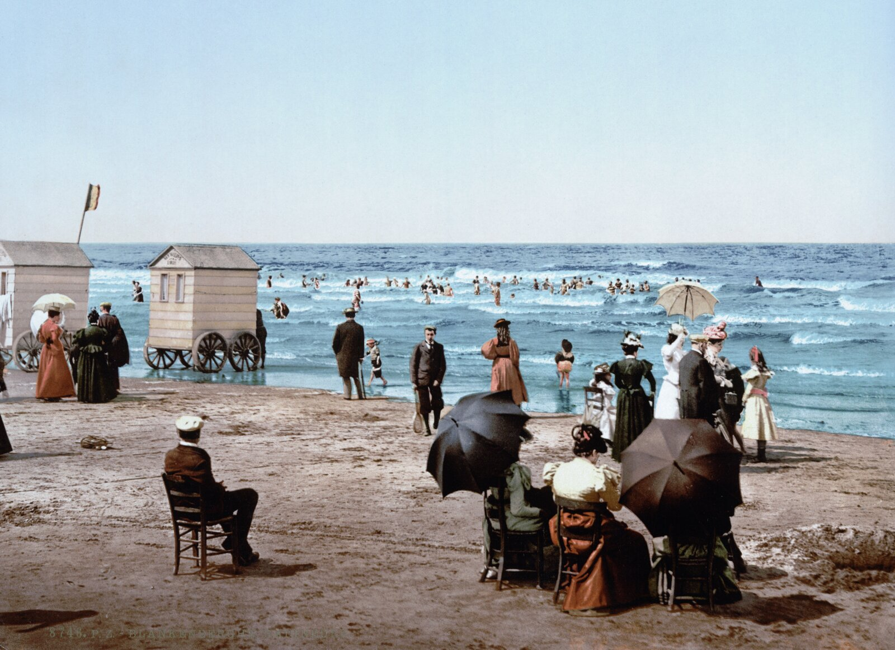

De geboorte van een badstad
In de tweede helft van de negentiende eeuw groeide Oostende uit tot één van de meest prestigieuze badsteden van Europa. De stad trok rijke toeristen aan die geloofden in de gezondheidsvoordelen van zeelucht en zeebaden. Dankzij de komst van koning Leopold II kreeg Oostende een luxueuze uitstraling met brede promenades, indrukwekkende hotels en elegante gebouwen langs de kust.
Tijdens de Belle Époque werd een bezoek aan zee een sociaal evenement. Aristocraten, kunstenaars ... wandelden over de dijk, bezochten het Kursaal en genoten van concerten en mondaine feesten. Oostende werd hierdoor niet alleen een toeristische bestemming, maar ook een symbool van rijkdom en elegantie aan de Noordzee.
Aristocratische instroom